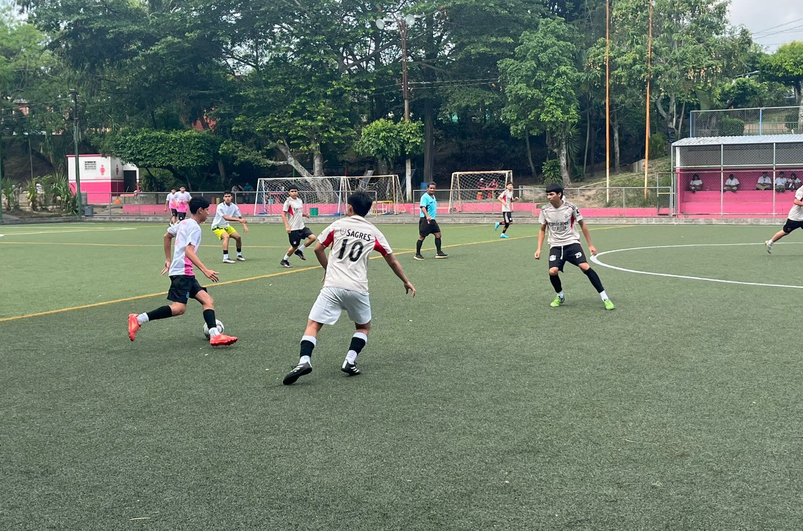
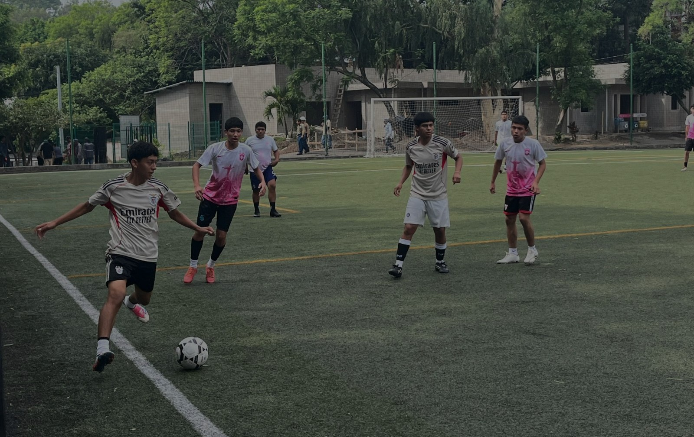
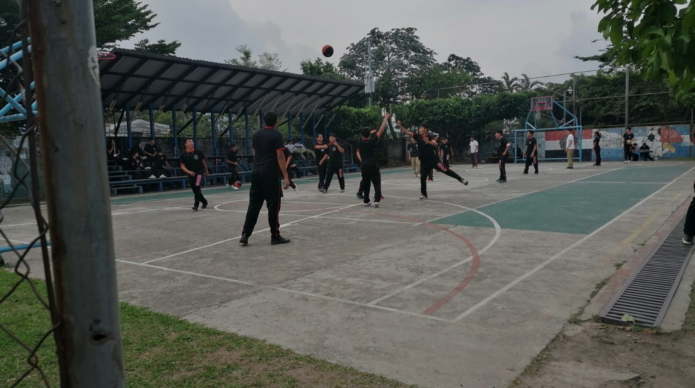

Actividades Depotivas
Las destresas de los estudiantes tambien no solo se limitan a actividades academicas si no tmbien a actividades depotivas que les permiten desarrollar habilidades prácticas y sociales. Estos espacios en nuestros instituto son importantes para la sana recreación física en la que los estudiantes pueden demostrar sus capacidades atleticas y deportivas.
Torneos Deportivos
Contamos con espacios y entrenamiento para diferentes disciplinas, entre las que destacan:
Fútbol
Se practica tanto en categorías masculinas como femeninas, participando en torneos intercolegiales.
Baloncesto
Actividades que fortalecen la coordinación y la cooperación grupal, enfocado en mejorar la condición física y la resistencia.
Objtivo
- Mejorar la salud física y mental de los estudiantes. - Desarrollar valores como el respeto, la responsabilidad y la sana competencia.

Deportes !
¿Qué son los deportes?
Estos son los intramuros que se realizaron el dia 27 de marzo para unos fue un dia donde sacaron todo su potencial en la cancha todo su amor por el futbol tanto niños como niñas lo juegan ese dia fue muy lindo se juga bastante pero bastante bien tanto ami que tambien fui parte de estar en la cancha ayudando a el equipo ubo tambien un mini torneo de basketbol ese mismo dia y hasta el dia de hoy estamos jugando los que se le puede llamar torneos largos que la fecha inicial fue el 7 de Mayo que se a estimado que finalizaran el dia Viernes 12 de Junio y el deporte femenino que fue casi igual se realizaron 4 de Mayo y la fecha estimada es como el 10 de Junio casi igual que al de los niños varones que se estan llevando a cabo en la cancha La Sultana y tambien esta semana pasada se empezaron los partidos de Basketbol en la cancha dentro de nuestra institucion tiempo que se estima de de 2 a 3 semana de duracion o incluso mas todavia.

Conclusion
Estos torneos no solo promueven la salud física y mental, sino que también fortalecen los valores de trabajo en equipo, respeto y responsabilidad, todo esto es escencialmete importante para cada estudiante y docente de fortalecer de buena manera cada potencial de los estudiantes.